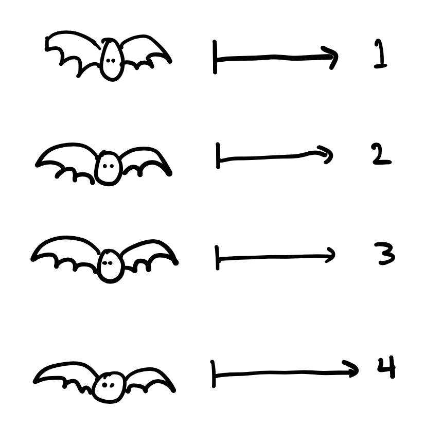

Lecture 5: Metric Spaces, Neighborhoods, and Limit Points
THIS PAGE IS STILL IN PROGRESS
Introduction to metric spaces
We call sets that have a notion of distance metric spaces.
In this activity, we’ll focus on common mathematical sets that you’re familiar with. However, metric spaces could show up in all kinds of applications: A set of nodes in a tree graph, a set of genetic sequences, or even a set of functions with particular properties can be metric spaces if you define a metric appropriately. Can you think of possible metrics for these sets?
Neighborhoods
Once we know we are working in a metric space, we have a way to define distances between points, which are elements in your set. It is useful to be able to talk about which points are closer to other points. If we have a metric space \(X\) with metric \(d(x,y)\), we can do this with the notion of a neighborhood (sometimes called an open ball).
The idea of a neighborhood helps us to define a topology on a set, which describes the spatial relationship between elements in the set. Two metric spaces could have the same topology but a different geometry: we’ll see examples in class to illustrate this point.
The topics in this course give you the foundation for further study of topology or geometry, if you’re interested in learning more about these ideas.
Limit points, interior points, and isolated points
We will study three important types of points in metric spaces: limit points, interior points, and isolated points.
Informally speaking, a limit point is a point where any neighborhood of that point includes another point that is in the set. Note that our limit point itself doesn’t need to be in the set; it just needs to be arbitrarily close to points in the set.
Example. Consider this picture of a metric space \(X\). Green points and shaded regions are included in the set \(B\subset X.\) Solid lines indicate that boundary points are included; dashed lines indicate that boundary points are not included. For each of the points \(a,b,c,d,e,z\) label if they are limit points, interior points, and/or isolated points.
Points \(b, c, z\) are not in \(B,\) whereas points \(a, d, e\) are.
- \(a\) is an isolated point.
- \(b\) is a limit point.
- \(c\) is a limit point.
- \(d\) is a limit point and an interior point.
- \(e\) is a limit point.
- \(z\) is none of these. (It needs to be in the set to be an isolated point.)
Example. Consider \(\mathbb{R}\) with the Euclidean metric. Let \(G = \{ \frac{1}{n}: n \in \mathbb{N}\}\). What are the limit points of \(G\)? What are the isolated points of \(G\)?
0 is the only limit point of \(G\). First, we argue that zero is a limit point. If we construct a neighborhood \(N_r(0)\), then we know that
END
To Embed a youtube video:
A figure:

Subsections
Various boxes.